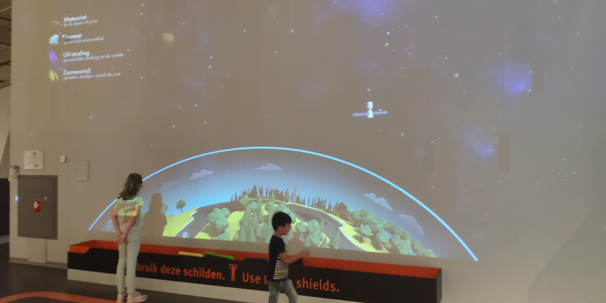
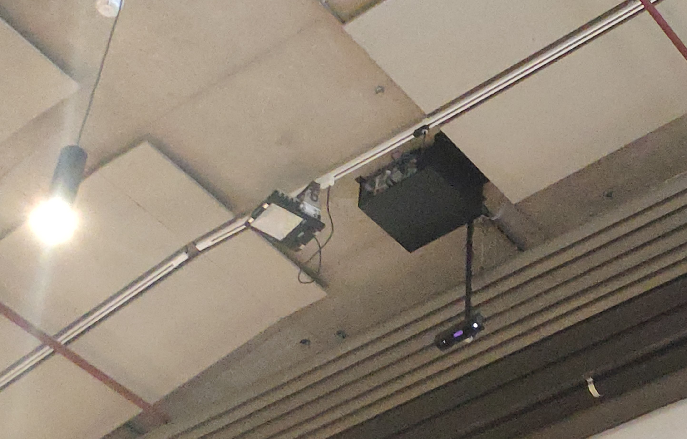
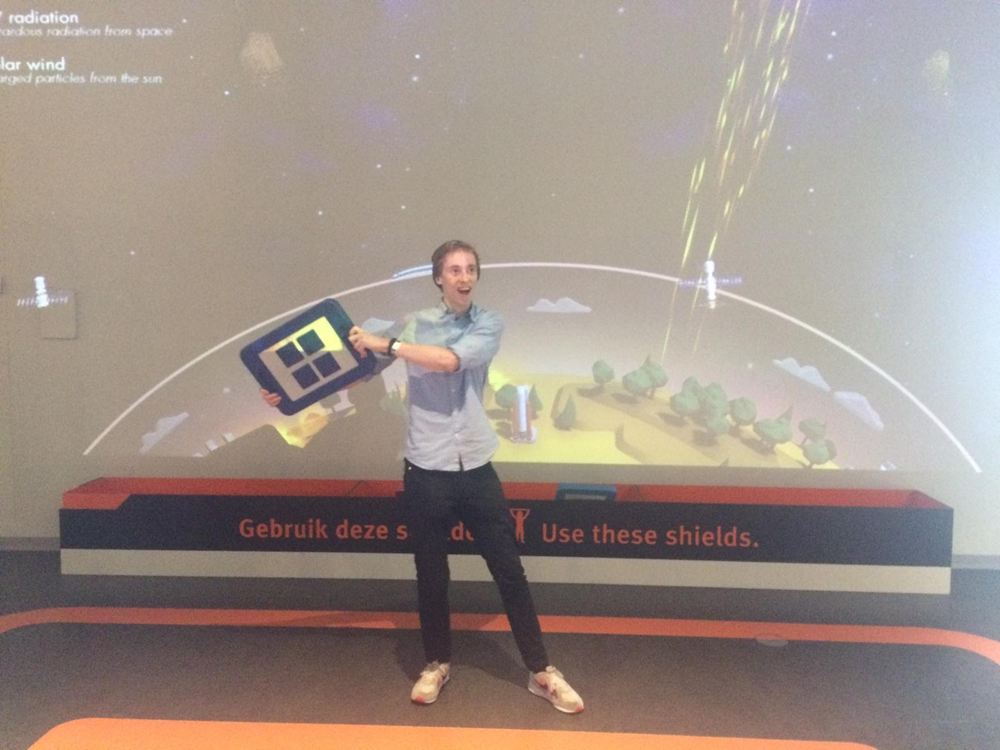

Excursie
Nemo Science Museum Amsterdam
27 Mei zijn wij met de groep van HCI naar het Nemo Science Museum in Amsterdam gegaan. Van deze excursie belicht ik hier een installatie die ik interessant vond. Ondanks dat het museum gericht is op basisschoolkinderen waren er wel interessante aspecten te ontdekken in de verschillende installaties. De installatie die ik het leukst vond was een playful interface die gebruik maakt van projectietechnologie om een spel te spelen. Aan het plafond hing een beamer en naar mijn verwachting een infrarood-camera die recht naar beneden keek.
Mensen zagen op het scherm een aardbol die aangevallen werd door meteorieten, kometen, en ufo’s. Vervolgens kon men een “schild” pakken om de aarde mee te beschermen. Er kwam dan boven de aarde een plateau die ervoor voor zorgde dat de indringende elementen (meteorieten e.d.) niet op de aarde konden landen. Ik denk dat er een grote lamp van UV-licht was die naar beneden scheen, en dat de reflectieve oppervlakken op de schilden het licht reflecteerde en voor een camera aan het plafond zichtbaar was. Zo kon de positie van het schild gemapt worden via software (zoiets zou mogelijk zijn in Unity of simpelweg Processing/P5.js). Je zag snel dat verschillende kinderen (en ik ook) snel een schild pakte om de indringers te verweren.
Het doel van de installatie was duidelijk om kinderen nieuwsgierig te maken en aan het bewegen te krijgen. Dit deed het fantastisch door gebruik te maken van gamification en het spel volgens de variabelen van de omgeving te laten verlopen. Wanneer er meer spelers waren, kwamen er meer indringers en vaker “aanvallen”, wat een leuke incentive was om met elkaar te gaan spelen. Een toevoeging van meerdere scenario’s, een scoresysteem, en een duidelijk doel zouden een spel als dit helemaal afmaken. Ik vond het design verder ook erg leuk, de flat style maakte het spel speels maar ook uitdagend.
 Heerlijk ongemakkelijke foto van mij bij voor de installatie